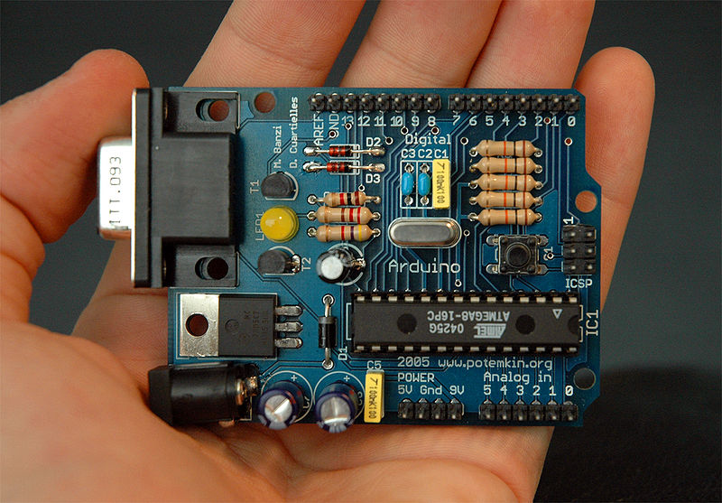
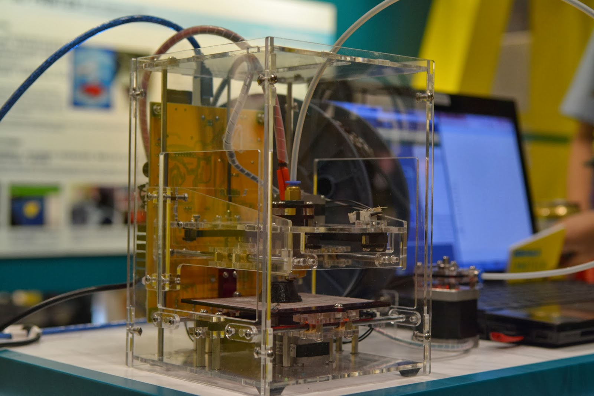
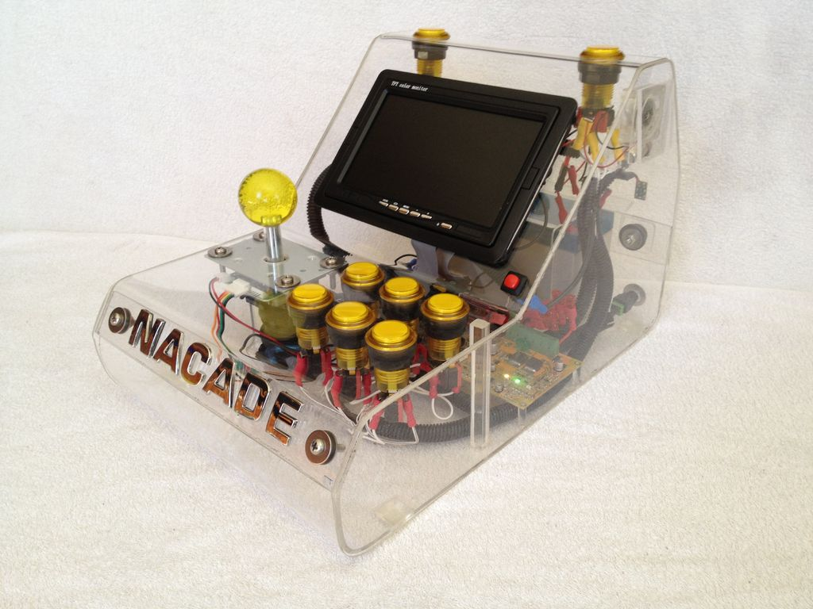
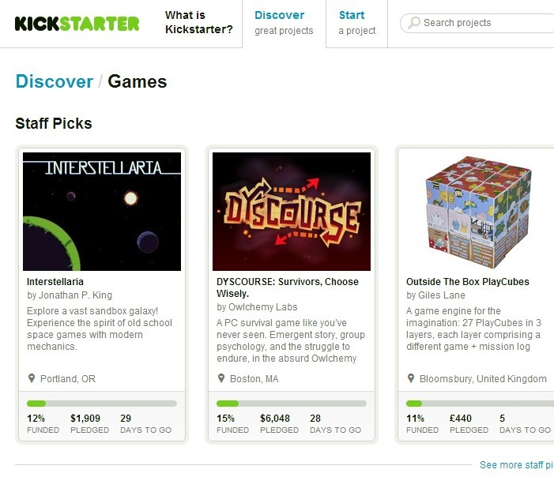
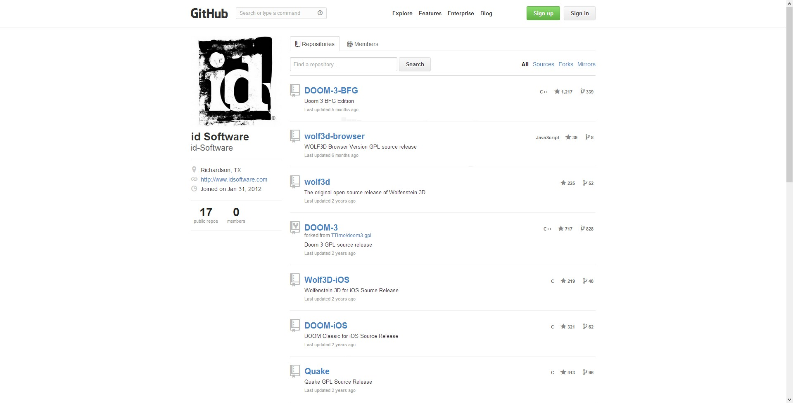

GE4102
Video Game: History, Industry, Society, and Creativity
Video Game: History, Industry, Society, and Creativity
Lecture 9
A Glimpse of Future
Technology trends
"Any sufficiently advanced technology
is indistinguishable from magic."
— Arthur C. Clarke
3D sensors / controllers
Kinect
PlayStation Move
Augmented reality / wearable computing
Google Glass
Brain–computer interface
Maker culture
Extension of the DIY culture.
Open source software and hardware.
Arduino 
3D printer 
Raspberry Pi
Rise of indie games
crowd-funding open source software, including game engines, and games Steam Greenlight
When is the future?
Moore's Law
the number of transistors on integrated circuits
doubles approximately every two years